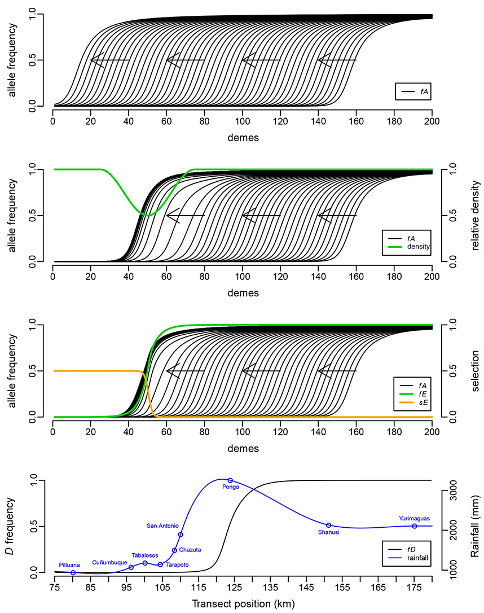
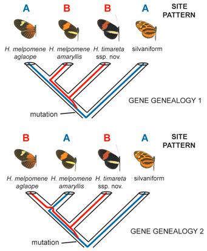
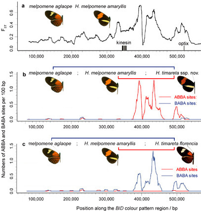
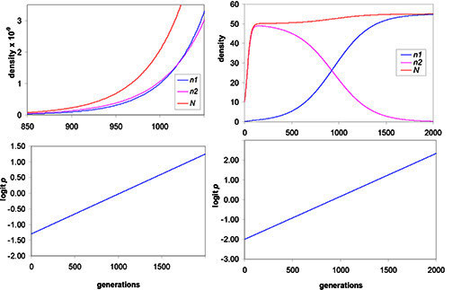

What prevents hybrid zones from moving? (a), top above. Could be there's a density trough (b), or a cline at another ecologically relevant locus that interferes (c)? We argue that it's more likely that a high rainfall peak (d), bottom at the edge of the Andes traps butterfly hybrid zones, to form a massive suture zone in many butterfly taxa. (See Rosser et al. 2014).

Four-taxon ABBA/BABA test of introgression.
ABBA and BABA nucleotide sites employed in the test
are derived (- - B -) in H. timareta compared with the silvaniform
outgroup (- - - A), but differ among H. melpomene amaryllis and
H. melpomene aglaope (either ABBA or BABA). As this almost exclusively
restricts attention to sites polymorphic in the ancestor of H. timareta
and H. melpomene, equal numbers of ABBA and BABA sites are expected
under a null hypothesis of no introgression (Green
et al. 2010 Science), as depicted in the two gene genealogies. From
Fig. 3 of Heliconius
Genome Consortium 2012

Evidence for adaptive introgression at the B/D mimicry locus
a, Genetic divergence between H. melpomene races aglaope
(rayed) and amaryllis (postman) across a hybrid zone in northeast Peru. Divergence,
FST, measured along the B/D genomic region peaks
in the locus that controls red wing pattern elements between the genes
kinesin and optix. b, c, Distribution of fixed ABBA and BABA sites (see above) along B/D region for two comparisons between H. melpomene and H. timareta. Excesses of ABBA in b and BABA in
c are highly significant, indicating introgression of colour pattern control region. From
Fig. 4 of Heliconius
Genome Consortium 2012

Is density-independent selection on r possible at equilibrium population densities? According to prevailing r-K formulations of Lotka-Volterra competition, apparently not; only alteration of K determines the outcome of competition. The paradox is simply resolved when equilibrium population density K depends, as it should, on intrinsic birth or death rates. It is best not to think of the equilibrium density as a fixed "carrying capacity." In the figure above, density change of n1, n2, and total N are shown at top, compared to logit-transformed frequency change of form 1 (to linearize density-independent evolution) below. Left: r-selection between exponentially growing populations; Right: r-selection between density-regulated populations; it works just the same. See Mallet (2012) "The struggle..."
 Selection against melanism in UK after the Clean Air Act. Survival of peppered
moth morphs (+/- SE) over the course of six
years of the predation experiment.
Unfilled diamonds with dashed lines, non-melanic; filled squares with solid lines, melanic.
From Fig. 1 of Laurence
Cook et al. 2012
Selection against melanism in UK after the Clean Air Act. Survival of peppered
moth morphs (+/- SE) over the course of six
years of the predation experiment.
Unfilled diamonds with dashed lines, non-melanic; filled squares with solid lines, melanic.
From Fig. 1 of Laurence
Cook et al. 2012
Journal articles
2015
Mallet J. 2015. New genomes clarify mimicry evolution. Nature Genetics 47: 306-307. REPRINT doi:10.1038/ng.3260 PREPRINT
Keightley PD, Pinharanda A, Ness RW, Simpson F, Dasmahapatra KK, Mallet J, Davey JW, Jiggins CD. 2015. Estimation of the spontaneous mutation rate in Heliconius melpomene. Molecular Biology and Evolution 32: 239-243. REPRINT (Open Access) doi:10.1093/molbev/msu302
Kozak KM, Wahlberg N, Neild A, Dasmahapatra KK, Mallet J & Jiggins CD. 2015. Multilocus species trees show the recent adaptive radiation of the mimetic Heliconius butterflies. Systematic Biology 64: 505-524. REPRINT (Open Access) doi:10.1093/sysbio/syv007
de Silva DL, Elias M, Willmott K, Mallet J & Day JJ. 2015. Diversification of clearwing butterflies with the rise of the Andes. Submitted. PREPRINT
Rosser N, Phillimore AB & Mallet J. 2015. Extensive range overlap between heliconiine sister species: evidence for sympatric speciation in butterflies? BMC Evolutionary Biology 15: 125. REPRINT (Open Access) doi:10.1186/s12862-015-0420-3
2014
Rosser N, Dasmahapatra KK & Mallet J. 2014. Stable Heliconius butterfly hybrid zones are correlated with a local rainfall peak at the edge of the Amazon basin [contrary to one prediction of Pleistocene refuge theory]. Evolution 68: 3470-3484. REPRINT - Supplementary info doi:10.1111/evo.12539
Mallet J. 2014. Speciation: frog mimics prefer their own. Current Biology 24: R1094-R1096. REPRINT doi:10.1016/j.cub.2014.10.001
2013
Martin SH, Dasmahapatra KK, Nadeau NJ, Salazar C, Walters JR, Simpson F, Blaxter M, Manica A, Mallet J, Jiggins CD. 2013. Genome-wide evidence for speciation with gene flow in Heliconius butterflies. Genome Research 23: 1817-1828. REPRINT - Supplementary Info (Open Access) doi:10.1101/gr.159426.113
Briscoe AD, Macias-Muñoz A, Kozak KM, Walters JR, Yuan F, Jamie GA, Martin SH, Dasmahapatra KK, Ferguson LC, Mallet J, Jacquin-Joly E, Jiggins CD 2013. Female behaviour drives expression and evolution of gustatory receptors in butterflies. PLoS Genetics 9: e1003620. REPRINT (Open Access) doi:10.1371/journal.pgen.1003620
Merrill RM, Naisbit RE, Mallet J, Jiggins CD. 2013. Ecological and genetic factors influencing the transition between host-use strategies in sympatric Heliconius butterflies. Journal of Evolutionary Biology 26: 1959-1967. REPRINT doi:10.1111/jeb.12194
Mérot C, Mavárez J, Evin A, Dasmahapatra KK, Mallet J, Lamas G, Joron M. 2013. Genetic differentiation without mimicry shift in a pair of hybridizing Heliconius species (Lepidoptera: Nymphalidae). Biological Journal of the Linnean Society 109: 830-847. REPRINT doi:10.1111/bij.12091
eratosignis. 2013. Introgression: Brower's criticisms. Part I. New evidence for hybridization and introgression is unsettling. www.heliconius.org. 7 January 2013. BLOG
eratosignis. 2013. Introgression: Brower's criticisms. Part II. Itemized critiques by Brower (2012), and comments thereon. www.heliconius.org. 7 January 2013. BLOG
Abbott R, Albach D, Ansell S, Arntzen JW, Baird SJE, Bierne N, Boughman J, Brelsford A, Buerkle CA, Buggs R, Butlin RK, Dieckmann U, Eroukhmanoff F, Grill A, Cahan SH, Hermansen JS, Hewitt G, Hudson AG, Jiggins C, Jones J, Keller B, Marczewski T, Mallet J, Martínez-Rodriguez P, Möst M, Mullen S, Nichols R, Nolte AW, Parisod C, Pfennig K, Rice AM, Ritchie MG, Seifert B, Smadja CM, Stelkens R, Szymura JM, Väinölä R, Wolf JBW, & Zinner D. 2013. Hybridization and speciation. Journal of Evolutionary Biology 26: 229-246. REPRINT doi:10.1111/j.1420-9101.2012.02599.x
Nadeau NJ, Martin SH, Kozak KM, Salazar C, Dasmahaptra KK, Davey JW, Baxter SW, Blaxter ML, Mallet J & Jiggins, C. 2013. Genome-wide patterns of divergence and gene flow across a butterfly radiation. Molecular Ecology 22: 814-826. REPRINT doi:10.1111/j.1365-294X.2012.05730.x
2012
The Heliconius Genome Consortium. 2012. Butterfly genome reveals promiscuous exchange of mimicry adaptations among species. Nature 487: 94-98. REPRINT (Open Access) doi:10.1038/nature11041
Cook LM, Grant BS, Saccheri IJ & Mallet, J. 2012. Selective bird predation on the peppered moth: the last experiment of Michael Majerus. Biology Letters 8: 609-612. REPRINT (Open Access) doi:10.1098/rsbl.2011.1136
Rosser N, Phillimore AB, Huertas B, Willmott KR, & Mallet J. 2012. Testing historical explanations for gradients in species richness in heliconiine butterflies of tropical America. Biological Journal of the Linnean Society 105: 479-497. REPRINT - Appendix doi:10.1111/j.1095-8312.2011.01814.x
Kronforst MR, Barsh GS, Kopp A, Mallet J, Monteiro A, Mullen SP, Protas M, Rosenblum EB, Schneider CJ, & Hoekstra HE. 2012. Unraveling the thread of nature's tapestry: the genetics of diversity and convergence in animal pigmentation. Pigment Cell and Melanoma Research 25: 411-433. REPRINT (Open Access) doi:10.1111/j.1755-148X.2012.01014.x
Mallet J, & Dasmahapatra KK. 2012. Hybrid zones and the speciation continuum in Heliconius butterflies. Molecular Ecology 21: 5643-5645. REPRINT doi:10.1111/mec.12058
Merrill RM, Wallbank RWR, Bull V, Salazar PA, Mallet J, Stevens M & Jiggins, CD. 2012. Disruptive ecological selection on a mating cue. Proceedings of the Royal Society B: Biological Sciences 279: 4907-4913. REPRINT doi:10.1098/rspb.2012.1968
Mallet J. 2012. The struggle for existence. How the notion of carrying capacity, K, obscures the links between demography, Darwinian evolution and speciation. Evolutionary Ecology Research 14: 627–665. REPRINT. eReader/Kindle-friendly PREPRINT
Hill RI, Elias M, Dasmahapatra KK, Jiggins CD, Koong V, Willmott KR & Mallet, J. 2012. Ecologically relevant cryptic species in the highly polymorphic Amazonian butterfly Mechanitis mazaeus sensu lato (Lepidoptera: Nymphalidae; Ithomiini). Biological Journal of the Linnean Society 106: 540-560. REPRINT doi:10.1111/j.1095-8312.2012.01874.x
Boenigk J, Ereshefsky M, Hoef-Emden K, Mallet J, Bass D. 2012. Concepts in protistology: species definitions and boundaries. European Journal of Protistology 48: 96-102 and supplementary text. REPRINT, Suppl. text 1 Mallet & Dasmahapatra, Suppl. text 2 Ereshefsky, Suppl. text 3 Hoef-Emden & Bass doi:10.1016/j.ejop.2011.11.004
Nadeau NJ, Whibley A, Jones RT, Davey JW, Dasmahapatra KK, Baxter SW, Quail MA, Joron M, ffrench-Constant RH, Blaxter ML, Mallet J & Jiggins, CD. 2012. Genomic islands of divergence in hybridizing Heliconius butterflies identified by large-scale targeted sequencing. Philosophical Transactions of the Royal Society B 367: 343-353. REPRINT, Supplementary Info doi:10.1098/rstb.2011.0198
2011
Hines HM, Counterman BA, Papa R, Albuquerque de Moura P, Cardoso MZ, Linares M, Mallet J, Reed RD, Jiggins CD, Kronforst MR, McMillan WO. 2011. A wing patterning gene redefines the mimetic history of Heliconius butterflies. Proceedings of the National Academy of Sciences, USA 108: 19666-19671. REPRINT
de Silva DL, Silva Vásquez A, & Mallet J. 2011. Selection for enemy-free space: eggs placed away from the host plant increase survival of a Neotropical ithomiine butterfly. Ecological Entomology 36: 667-672. REPRINT
Mallet J, Wynne IR, Thomas CD. 2011. Hybridisation and climate change: brown argus butterflies in Britain (Polyommatus subgenus Aricia). Insect Conservation and Diversity 4: 192-199. REPRINT
Mallet J & Dasmahapatra K. 2011. Catfish mimics (News and Views on Alexandrou et al. article in same issue). Nature 469: 41-42. REPRINT
2010
Baxter SW, Nadeau N, Maroja L, Wilkinson P, Counterman BA, Dawson A, Beltrán M, Perez-Espona S, Chamberlain N, Ferguson L, Clark R, Davidson C, Glithero R, Mallet J, McMillan WO, Kronforst M, Joron M, ffrench-Constant R & Jiggins CD. 2010. Genomic hotspots for adaptation: the population genetics of Müllerian mimicry in the Heliconius melpomene clade. PLoS Genetics 6(2): e1000794. LINK
Counterman BA, Araujo-Perez F, Hines HM, Baxter SW, Morrison CM, Lindstrom DP, Papa R, Ferguson L, Joron M, ffrench-Constant R, Smith CP, Nielsen DM, Chen R, Jiggins CD, Reed RD, Halder G, Mallet J & McMillan WO. 2010. Genomic hotspots for adaptation: the population genetics of Müllerian mimicry in Heliconius erato. PLoS Genetics 6(2): e1000796. LINK (Open Access)
Dasmahapatra KK, Lamas G, Simpson F, & Mallet J. 2010. The anatomy of a 'suture zone' in Amazonian butterflies: a coalescent-based test for vicariant geographic divergence and speciation. Molecular Ecology 19: 4283-4301. REPRINT (Open Access)
Mallet J. 2010. Why was Darwin's view of species rejected by 20th Century biologists? Biology and Philosophy 25: 497-527. REPRINT
Mallet J. 2010. Group selection and the development of the biological species concept. Philosophical Transactions of the Royal Society 365: 1853-1863. REPRINT
de Silva DL, Day JJ, Elias M, Willmott K, Whinnett A & Mallet J. 2010. Molecular phylogenetics of the neotropical butterfly subtribe Oleriina (Nymphalidae: Danainae: Ithomiini). Molecular Phylogenetics and Evolution 55: 1032-1041. REPRINT
Dasmahapatra KK, Elias M, Hill RI, Hoffman JI, & Mallet J. 2010. Mitochondrial DNA barcoding detects some species that are real, and some that are not. Molecular Ecology Resources 10: 264-273. REPRINT
Mallet J. 2010. Shift happens! Shifting balance and the evolution of diversity in warning colour and mimicry. Ecological Entomology 35 (Suppl. 1): 90-104. REPRINT
Gourbière S & Mallet J. 2010. Are species real? The shape of the species boundary with exponential failure, reinforcement, and the 'missing snowball.' Evolution 64: 1-24. REPRINT
2009
Mallet, J Meyer, A Nosil, P and Feder JL. 2009. Space, sympatry and speciation. Journal of Evolutionary Biology 22:2332-2341. REPRINT
Sachs JD, Baillie JEM, Sutherland WJ, Armsworth PR, Ash N, Beddington J, Blackburn TM, Collen B, Gardiner B, Gaston KJ, Godfray HCJ, Green RE, Harvey PH, House B, Knapp S, Kümpel NF, Macdonald DW, Mace GM, Mallet J, Matthews A, May RM, Petchey O, Purvis A, Roe D, Safi K, Turner K, Walpole M, Watson R & Jones, KE. 2009. Policy forum: Biodiversity conservation and the Millennium Development Goals. Science 325: 1502-1503. LINK
Mallet J. 2009. Alfred Russel Wallace and the Darwinian species concept: his paper on the swallowtail butterflies (Papilionidae) of 1865. Gayana 73 (suppl. 1) 35-47. REPRINT
Mallet J. 2009. Ask the ecologist: Are genetic barcodes the magic tools we need to achieve a precise estimation of biodiversity in tropical ecosystems? What are the advantages and problems associated with this methodological proposal? Ecology Briefs. Informative Bulletin of the Centro Internacional de Ecología Tropical (CIET), Caracas Vol. 1 (2): 3. REPRINT
2008
Mallet J. 2008. Mayr's view of Darwin: was Darwin wrong about speciation? Biological Journal of the Linnean Society 95: 3–16. REPRINT
Mallet J. 2008. Hybridization, ecological races, and the nature of species: empirical evidence for the ease of speciation. Philosophical Transactions of the Royal Society B-Biological Sciences. 363: 2971–2986. REPRINT
2007
Mallet J, Beltrán M, Neukirchen W & Linares M. 2007. Natural hybridization in heliconiine butterflies: the species boundary as a continuum. BMC Evolutionary Biology 7:28. Heliconiine hybrid database
Mallet J. 2007. Hybrid speciation. Nature 446: 279-283. REPRINT
Anstead JA, Mallet J & Denholm I. 2007. Temporal and spatial incidence of alleles conferring knockdown resistance to pyrethroids in the peach-potato aphid, Myzus persicae (Hemiptera: Aphididae), and their association with other insecticide resistance mechanisms. Bulletin of Entomological Research 97: 243-252.
Dasmahapatra KK, Silva A, Chung J-W & Mallet J. 2007. Genetic analysis of a wild-caught hybrid between non-sister Heliconius butterfly species. Biology Letters 3: 660-663. REPRINT
Elias M, Hill RI, Willmott K, Dasmahapatra K, Brower AVZ, Mallet J & Jiggins CD. 2007. Limited performance of DNA barcoding in a diverse community of tropical butterflies. Proceedings of the Royal Society B 274: 2881-2889. REPRINT
Beltrán M, Jiggins CD, Brower AVZ, Bermingham E & Mallet J. 2007. Do pollen feeding and pupal-mating have a single origin in Heliconius? Inferences from multilocus sequence data. Biological Journal of the Linnean Society 92: 221-239. REPRINT
2006
Mallet J. 2006. What has Drosophila genetics revealed about speciation? Trends in Ecology and Evolution 21: 186-193. REPRINT
Bull V, Beltrán M, Jiggins CD, McMillan WO, Bermingham E & Mallet J. 2006. Polyphyly and gene flow between non-sibling Heliconius species. BMC Biology 4:11
Joron M, Papa R, Beltrán M, Chamberlain N, Mavárez J, Baxter S, Abanto M, Bermingham E, Humphray SJ, Rogers J, Beasley H, Barlow K, ffrench-Constant RH, Mallet J, McMillan WO & Jiggins CD. 2006. A conserved supergene locus controls colour pattern diversity in Heliconius butterflies. PLoS Biology 4: e303. REPRINT
Dasmahapatra KK & Mallet J. 2006. DNA barcodes: recent successes and future prospects. Heredity 97: 254 - 255. REPRINT
International Commission for Zoological Nomenclature. 2006. Opinion 2152 (Case 3320). Papilio sapho, Drury, 1782 (Insecta, Lepidoptera): specific name conserved. Bulletin of Zoological Nomenclature 63: 144-145. REPRINT
2005
Mallet J, Isaac NJB & Mace GM. 2005. Taxonomic inflation and divergence between species. Reply to Harris and Knapp. Trends in Ecology and Evolution 20: 8-9. REPRINT
Lamas G & Mallet JLB. 2005. Case 3320. Papilio sapho Drury, 1782 (currently Heliconius sapho; Insecta, Lepidoptera): proposed conservation of the specific name. Bulletin of Zoological Nomenclature 62: 21-24. REPRINTMallet
J. 2005. Hybridization as an invasion of the genome. Trends
in Ecology and Evolution 20: 229-237. REPRINT;
Appendix
1; Appendix
2
Gourbiere S & Mallet J. 2005. Has adaptive dynamics contributed to the understanding
of adaptive and sympatric speciation? Journal of Evolutionary Biology
18:1201-1204.
REPRINT
Mallet J. 2005. Speciation in the 21st Century. Review of "Speciation", by Jerry A. Coyne & H. Allen Orr. Heredity 95: 105-109. REPRINT
Whinnett A, Brower AVZ, Lee M-M, Willmott KR & Mallet J. 2005. Phylogenetic utility of Tektin, a novel region for inferring systematic relationships amongst Lepidoptera. Annals of the Entomological Society of America 98: 873-886. REPRINT
Whinnett A, Willmott KR, Brower AVZ, Simpson F, Lamas G & Mallet J. 2005. Mitochondrial DNA provides an insight into the mechanisms driving diversification in the ithomiine butterfly Hyposcada anchiala (Lepidoptera: Nymphalidae, Ithomiinae). European Journal of Entomology 102: 633-639. REPRINT
Drès M & Mallet J. 2005. Molecular and behavioural evidence for gene flow between host races of the larch budmoth Zeiraphera diniana (Lepidoptera: Tortricidae). Proceedings of the Royal Society B, submitted. PREPRINT
Whinnett A, Zimmermann M, Willmott KR, Herrera N, Mallarino R, Simpson F, Joron M, Lamas G & Mallet J. 2005. Strikingly variable divergence times inferred across an Amazonian butterfly 'suture zone'. Proceedings of the Royal Society B 272: 2525-2533. REPRINT
Book chapters
Mallet J. 2014. Nabokov's evolution. In Blackwell S, Johnson K, eds. Fine Lines: Nabokov's Art and Science. New Haven, Connecticut: Yale University Press.
Mallet J. 2013. Species, concepts of. In SA Levin, ed. Encyclopedia of Biodiversity. Volume 6. Waltham, Mass.: Academic Press, 679-691. REPRINT
Mallet J. 2013. Subspecies, semispecies, superspecies. In SA Levin, ed. Encyclopedia of Biodiversity. Volume 7. Waltham, Mass.: Academic Press, 45-48. REPRINT
Mallet J. 2013. Darwin and species. In M Ruse, ed. The Cambridge Encyclopedia of Darwin and Evolutionary Thought. Cambridge University Press, Cambridge, 109-115. PREPRINT
Leimar O, Tullberg B, & Mallet J. 2012. Mimicry, saltational evolution and the crossing of fitness valleys. In EI Svensson & R Calsbeek, eds. The Adaptive Landscape in Evolutionary Biology. Oxford University Press, Oxford. pp. 259-270. REPRINT
Descimon H & Mallet J. 2009. Bad species. In J Settele, TG Shreeve, M Konvicka, and H Van Dyck, eds. Ecology of Butterflies in Europe. Cambridge University Press, Cambridge. pp. 219-249. PREPRINT (somewhat earlier version, but with plates and references), REPRINT (as published, but with no plates or references).
Mallet J. 2009. Introduction. In C-L Chan and GW Beccaloni, eds. Alfred Russel Wallace (1865). "On the Phenomena of Variation and Geographical Distribution as illustrated by the Papilionidae of the Malayan Region." Reprint edition. Natural History Publications (Borneo), Kota-Kinabalu, Malaysia. PREPRINT
Mallet J. 2009. Rapid speciation, hybridization and adaptive radiation in the Heliconius melpomene group. In R Butlin, J Bridle & D Schluter, eds. Speciation and Patterns of Diversity. Cambridge University Press. pp. 177-194. REPRINT
Mallet J. 2008. Wallace and the species concept of the early Darwinians. In CR Smith & GW Beccaloni, eds. Natural Selection and Beyond: The Intellectual Legacy of Alfred Russell Wallace. Oxford University Press. pp. 102-113. REPRINT
Mallet J. 2006. Species concepts. In: Evolutionary Genetics: Concepts and Case Studies In CW Fox and JB Wolf, eds. Oxford University Press, Oxford, pp. 367-373. REPRINT
Jiggins CD, Emelianov I & Mallet J. 2005. Pleiotropy promotes speciation: examples from phytophagous moths and mimetic butterflies. In M Fellowes, G Holloway & J Rolff, eds. Insect Evolutionary Ecology. CABI Publishing, Wallingford, Oxon., pp. 455-478. REPRINT (with incorrect pagination)
Mallet J. 2001. Gene flow. In: IP Woiwod, DR Reynolds, & CD Thomas, eds. Insect Movement: Mechanisms and Consequences. CAB International, Wallingford, UK. pp. 337-360. REPRINT [read only REPRINT]